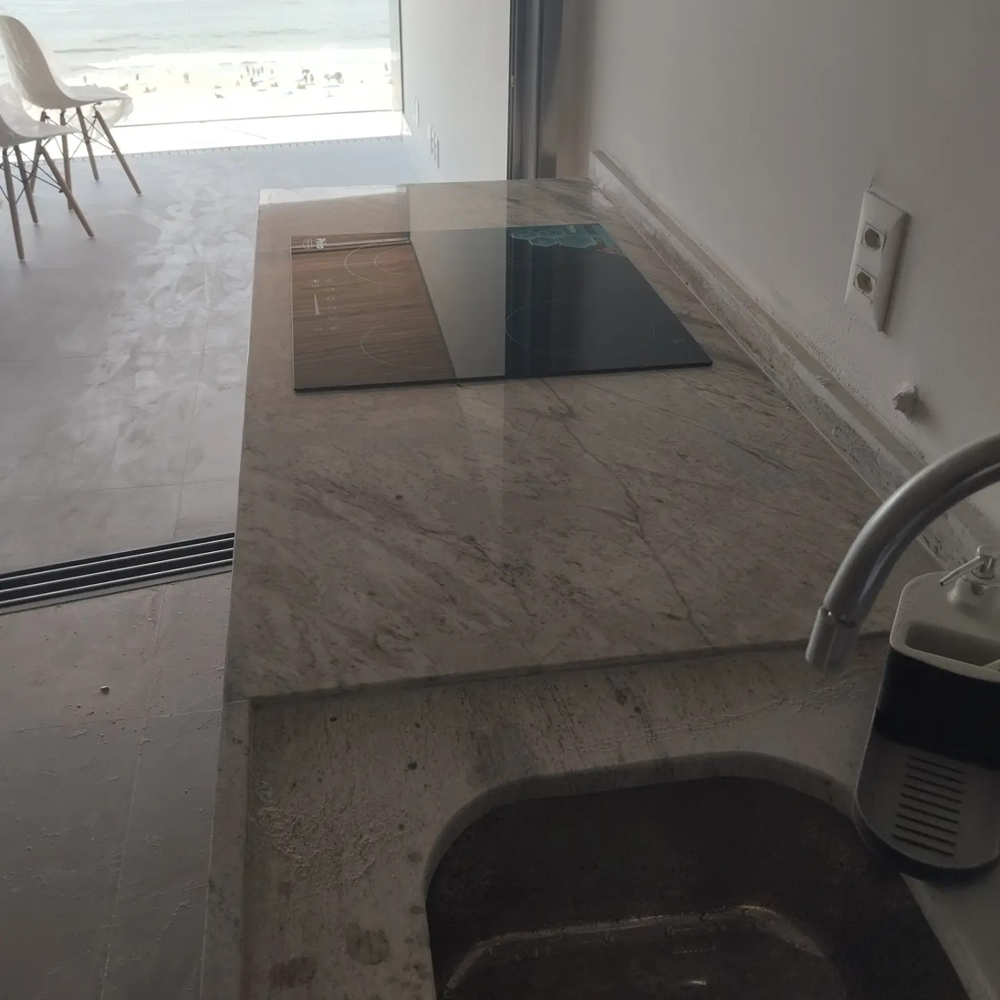
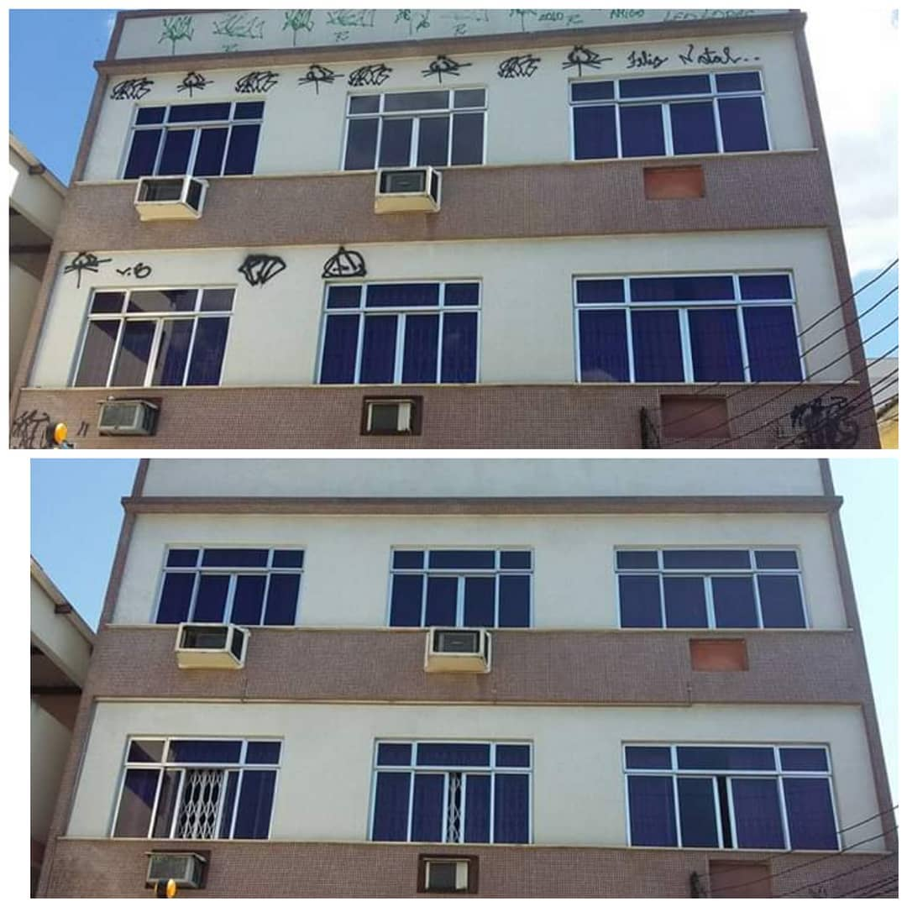

Polimento e Cristalização
Recuperação do brilho original de mármores e granitos com técnicas profissionais e produtos específicos.
Soluções completas para pisos, bancadas e fachadas em pedra natural. Atendimento técnico, orçamento rápido e garantia de qualidade.
Empresa familiar com mais de duas décadas de atuação em restauração e manutenção de pedras naturais. Atuamos com transparência, prazos cumpridos e garantia técnica.
Preservar e valorizar superfícies em pedra, entregando acabamento duradouro.
Ser referência regional em qualidade e atendimento técnico.
Atendemos residências, condomínios e obras comerciais com serviços especializados.
Recuperação do brilho original de mármores e granitos com técnicas profissionais e produtos específicos.
Correção de rejuntes, troca garantir acabamento estético e funcional.
Proteção contra manchas e umidade para bancadas, pisos e fachadas, aumentando a durabilidade da pedra.
Limpeza técnica e reparos para fachadas em pedra natural.
Reconstituição de bordas danificadas e polimento para acabamento invisível.
Planos periódicos de manutenção para conservar o aspecto e a integridade das superfícies.
Alguns trabalhos recentes. Clique nas imagens para ampliar (implemente lightbox conforme necessidade).




O que nossos clientes dizem sobre o trabalho.
"Excelente atendimento e resultado impecável. Recuperaram o brilho da nossa cozinha."
"Profissionais pontuais e muito cuidadosos. Recomendo para qualquer serviço em pedra."
Solicite orçamento sem compromisso. Atendimento por telefone, WhatsApp ou formulário.